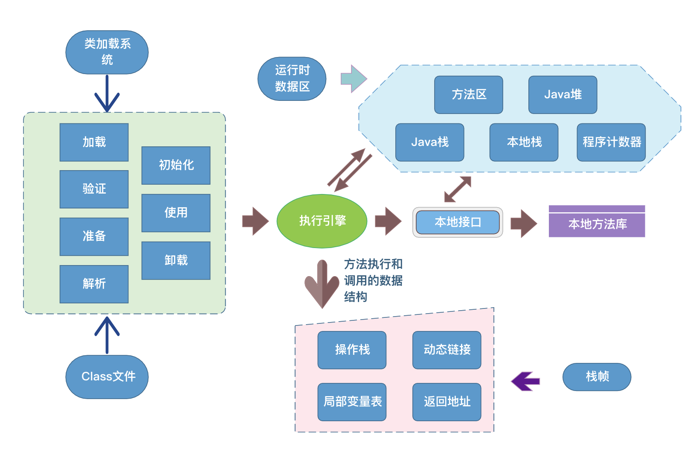
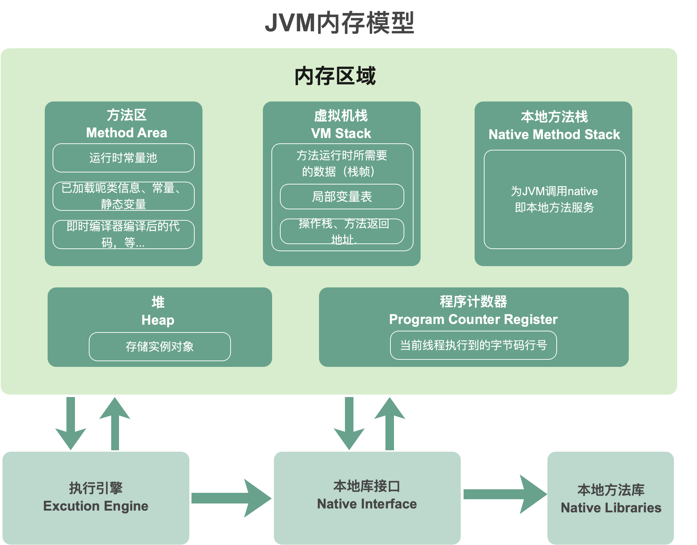
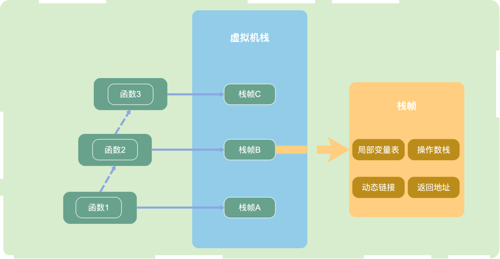
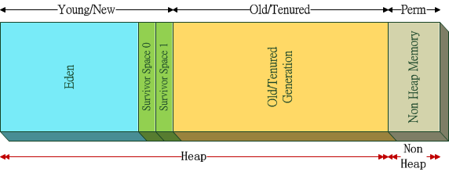
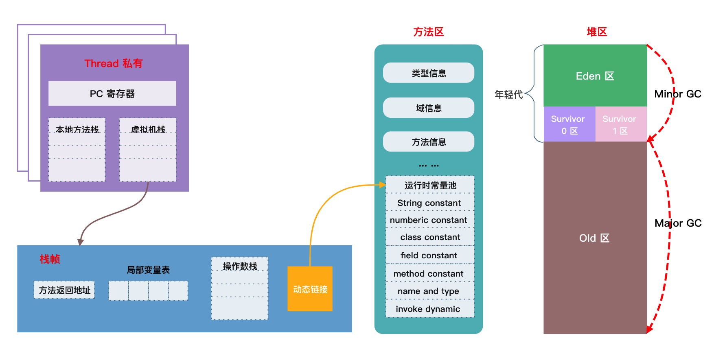
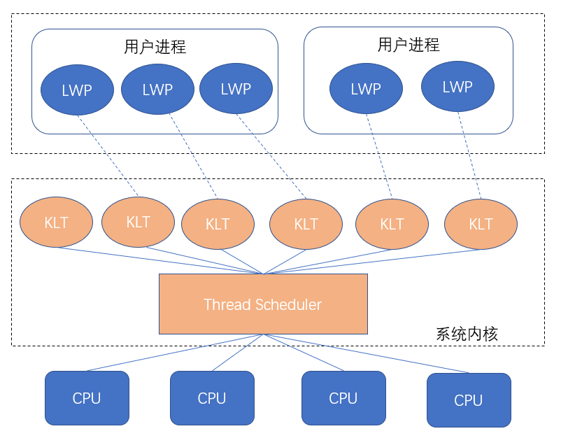
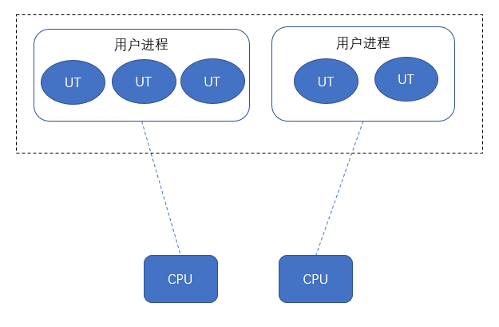
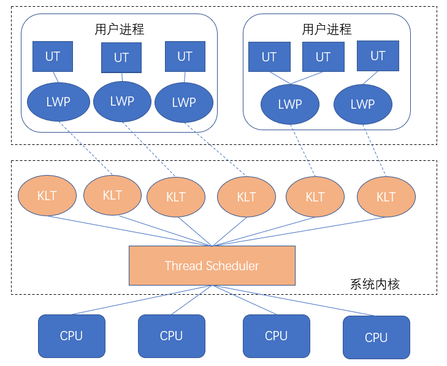

Java基础--图解JVM内存模型和JVM线程模型
前言
各位亲爱的读者朋友，我正在创作 Java多线程系列 文章，严格的说，JVM内存模型的知识并不隶属于Java多线程范畴，但在讨论多线程的过程中，会涉及到相关概念，考虑到它作为 面经常客，故单独成篇进行知识梳理。
在有意无意渲染之下，环境中充斥着焦虑，虽然我并不认为正经面试真的有必要考察这些，毕竟没有几个岗位是开发JVM的。本篇文章将尽最大努力做到容易记忆，帮助各位克服焦虑！
在本篇中，将JVM内存模型以及JVM线程模型的关键知识，形成凝练的图、辅以文字，同读者一起回顾并掌握这些知识。
作者按：本篇按照自己有限的知识进行整理，如有谬误，还请读者在评论区不吝指出
了解系列以及总纲：Java多线程系列
先来看一张 较为完整 的图：

作者按：图片源自亿图图示的模板
再右侧再补充GC部分后，就比较完整了。今天的文章中，类加载部分略去，GC部分略去。
作者按：读者朋友们还是应当将这两部分吃透的，如果面试遇到，可以顺着图展开作答
图中的 Java栈 又称为 Java虚拟机栈 、 虚拟机栈 、 JVM栈 等； 本地栈 即 本地方法栈
JVM内存模型
从上图中，我们将运行时数据区剥出来，形成下图，即JVM内存模型 (内存区域)：

在JVM1.8中，图中的 方法区 为 元数据区
在多线程背景下，我们应个景：
- 堆和方法区是 线程共享 的
- 虚拟机栈、本地方法栈、程序计数器是 线程隔离 的
下面展开谈一谈这五个区域的作用。
以Java虚拟机规范为界，不讨论具体实现
方法区（JVM1.8为元数据区）
方法区的作用为：存放虚拟机加载的：类型信息，域（Field）信息，方法（Method）信息，常量，静态变量，即时编译器编译后的代码缓存
值得注意的是，无法申请到内存时，将抛出 OutOfMemoryError
方法区中存在运行时常量池，字面量、符号引用等存放入其中。
在Hotspot的演变过程中：
- Java6及之前：方法区存在永久代，保存有静态变量
- Java7：进行去永久代工作，虽然还保留着，但静态常量池，如字符串常量池，已经移动到堆中
- Java8：移除永久代，类型信息、域（Field）信息、方法（Method）信息存放在元数据区；字符串常量池、静态变量存放在堆区
作者按：不同的虚拟机实现细节我也没有研究过，感兴趣的读者可以自行研究，如有靠谱文章希望分享下
虚拟机栈
虚拟机栈中保存了 每一次 方法调用 的信息。
每个Java线程创建时，都会创建对应的 虚拟机栈 ，每一次方法调用，都会往栈中压入一个 栈帧。如下图：

而栈帧中，包含：
- 局部变量表：保存函数 （即方法） 的局部变量
- 操作数栈：保存计算过程中的结果，即临时变量
- 动态链接：指向方法区的运行时常量池。字节码中的
方法调用指令以常量池中指向方法的符号引用为参数。 - 方法的返回地址
本地方法栈
和虚拟机栈功能上类似，它管理了native方法的一些执行细节，而虚拟机栈管理的是Java方法的执行细节。
程序计数器
程序计数器记录线程执行的字节码行号，如果当前线程正在运行native方法则为空。也有称之为 PC寄存器
字节码解释器在工作时，通过改变计数器的值来选取下一跳需要执行的字节码指令，分支 、 循环 、
跳转 、 异常处理 、线程恢复 等基本功能都需要依赖计数器来完成。
Java虚拟机的多线程实现方式：通过 轮流切换并分配处理器执行时间 实现
所以，在任意确定的时间点，一个处理器只会处理一个线程中的指令。为了正确地处理 线程切换后的任务恢复 ，每一个线程都具有自身的程序计数器
堆
堆提供了类实例和数组的内存，可以按如下方式划分：
- 新生代 亦可称之年轻代、New Generation
- Eden区
- Survivor 区 S0和S1中存在互相移动，一些文章中的from、to是指移动上的逻辑关系
- S0
- S1
- 老年代 Old Generation
如下图所示：

划分和对象创建与GC有关，
- 新生成的对象在Eden区
- 触发 Minor GC后，还 "幸存" 的对象移动到S0
- 再次触发Minor GC后，S0和Eden 中存活的对象被移动到S1中，S0清空
- 每次移动时，自动递增计数器，超过默认值时 （印象中是16），移动到老年代，如果Eden中没有足够内存分配，也将直接在老年代中分配内存
- 老年代中依靠Major GC
小总结
将上文的知识点进行汇总后，我们可以得到一张新图：

图片来自亿图图示模板，再次不用画图了😂
JVM线程模型
一个Java线程的实现方式可以有三种：
- 使用内核线程实现
- 使用用户线程实现
- 使用用户线程加轻量级进程混合实现
印象中JVM没有规定线程实现的规范，具体研究需要结合具体的JVM实现，下面我们简单探索一下
内核线程模型
内核线程模型: 完全依赖操作系统内核提供的内核线程（Kernel-Level Thread ，KLT）来实现多线程。这种方式下：线程的切换调度 由 系统内核 完成。
一般而言，程序不会直接使用内核线程，而是使用一种 高级接口 即 轻量级进程（Light Weight Process,LWP）。

图片来自网络
用户进程中，通过 LWP 使用系统的 内核线程 。由于其一对一的关系，又称为 一对一模型
由于 用户线程 与 LWP 一一对应，LWP 是独立的调度单元，因此某个LWP在 用户进程调用过程中 发生阻塞，以及在 系统调用中 发生了阻塞，都不会影响整个进程的执行。
但是LWP依托内核线程，所以 线程操作 需要 依赖系统调用 ，代价是较高的，需要在 用户态（User Mode） 和 内核态（Kernel Mode） 中来回切换；
而且每个 LWP 都需要一个 内核线程 进行支持，因此 LWP 要消耗一定的内核资源，因此一个系统仅可支持 少量有限 的 LWP。
用户线程模型
排除掉 内核线程 ，JVM平台也可以实现 用户线程 User Thread 下文简称 UT ，完全自行实现创建、调度、销毁。
区别于内核线程模型，此时线程的调度不再依赖内核，极少占据内核资源，基本限定在用户态内，所以可以突破量的限制，并且减少线程切换时的损耗。
这样看起来似乎很美好，但难以利用多核CPU的优势，并且一旦产生系统调用发生中断，其他线程也将被中断。
这种 多对一模型 的实用性较低。

混合模型
又称 多对多模型 ，这种方式充分利用了上面两种方式的优点。

这种模型中，既存在UT，也存在LWP。
创建、切换线程(UT)依旧是廉价的，并且可以拥有大量的线程；同时利用 LWP作为UT到KLT（内核线程）的桥梁，
享受了系统内核的线程调度、CPU映射，免去了自行实现系统调用的部分，进行系统调用时，阻塞整个进程的概率也低于 用户线程模型 。
后记
又水了一篇文章，相信各位读者朋友已经基本记住了这些内容，可以愉快的侃大山了。希望疫情早日结束。